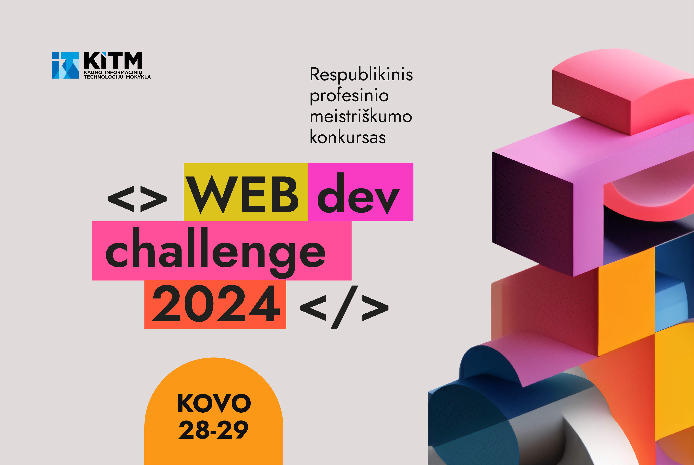

<>WEB dev challenge 2024

<>WEB dev challenge 2024 – respublikinis profesinio meistriškumo konkursas, kuriame varžysis Lietuvos profesinių mokyklų moksleiviai, gebantys taikyti WEB aplikacijų kūrimo technologijas.
Konkurso tikslas – ugdyti moksleivių gebėjimą spręsti problemas taikant pažangias WEB technologijas, skatinti kūrybiškumą ir bendradarbiavimą.
Konkursas vyks 2024 m. kovo 28-29 d., per dvi konkurso dienas dalyviai turės galimybę pademonstruoti programavimo žinias, taikant jas konkrečioje probleminėje situacijoje.
Konkurso užduotys:
Pirmąją dieną dalyviai kurs Back-End aplikaciją, antrąją dieną – Front-End aplikaciją. Konkurso dalyviai užduotis atliks 2 amžiaus kategorijose:
1 kategorija: 10 – 12 klasių mokiniai;
2 kategorija: mokiniai po 12 klasių (iki 25 metų amžiaus).
Konkurso dalyviai turi būti susipažinę bei gebėti taikyti WEB technologijas pagal kategoriją, kurioje dalyvauja:
1 kategorija:
Front-End: HTML5, CSS3, JavaScipt
Back-End: bet kuri iš išvardintų: PHP, JavaScript, C#, Java, Python ir MySQL
Kita: GIT
2 kategorija:
Front-End: HTML5, SASS, JavaScript, React JS, REST API
Back-End: MySQL, bet kuri iš išvardintų: PHP, JavaScript, C#, Java, Python
Kita: GIT
Konkurso darbų vertinimas ir apdovanojimai
Konkurso darbus vertins komisija:
Vyr. vertintojas – profesijos mokytojas metodininkas („Euroskills“ ekspertas) Martynas Kašelionis
Kauno informacinių technologijų mokyklos mokytojas
Vertintojas iš kitos mokyklos (atrenkamas burtų keliu)
Verslo atstovas
Konkurso I - III vietų laimėtojai bus apdovanoti prizais ir diplomais. Visi kiti dalyviai ir mokytojai gaus pažymėjimus apie dalyvavimą konkurse.
Pagrindinis puslapuis